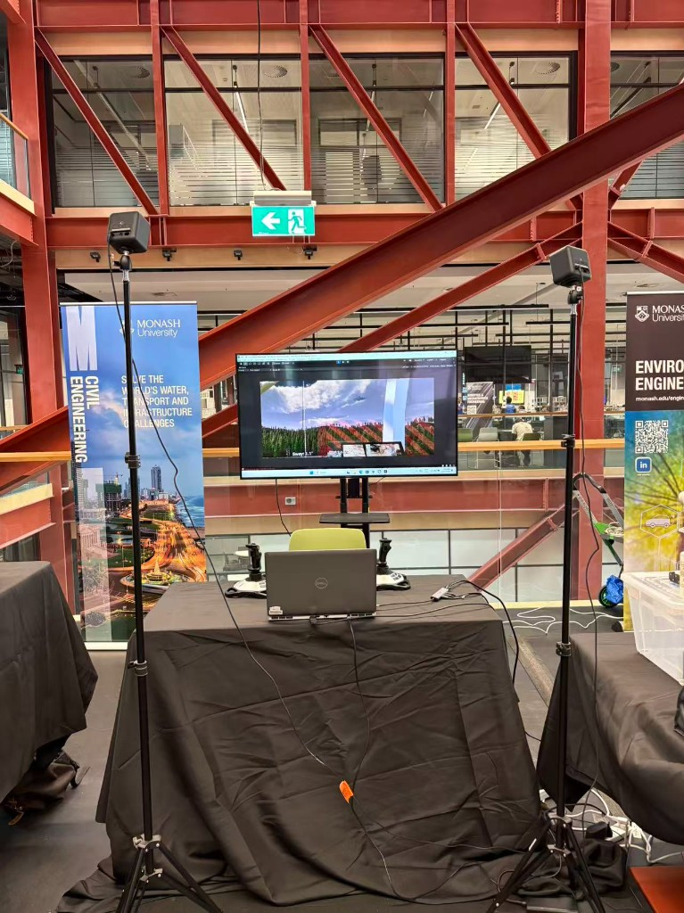
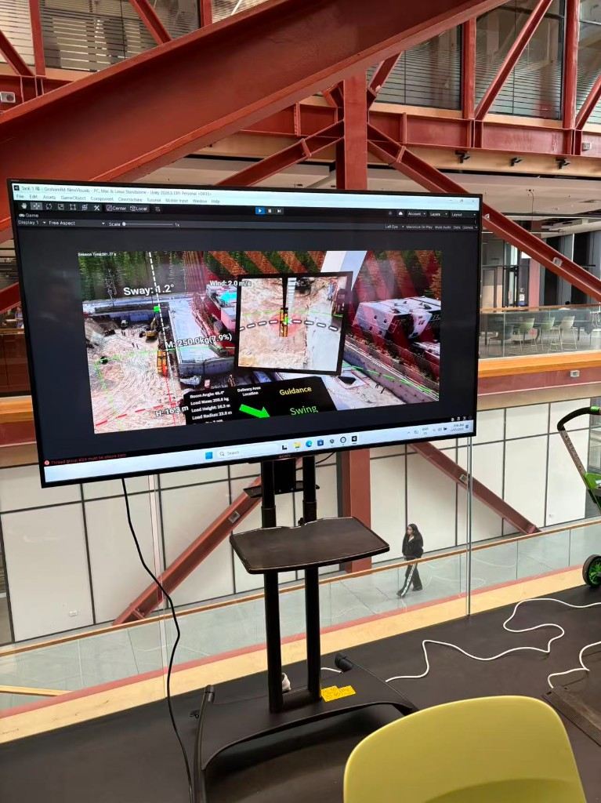

On 6 May 2026, ICON Lab supported the organisation of the Monash University Engineering Faculty Specialisation Event, where prospective students explored research and learning opportunities across the faculty. The event provided an excellent platform to connect with visitors and share the lab's current research directions.
During the showcase, ICON Lab presented research on the integration of mixed reality and crane operations. The demonstration highlighted how immersive visualisation and human-centred digital interfaces can improve situational awareness, decision-making, and operational safety in complex lifting and construction environments.

